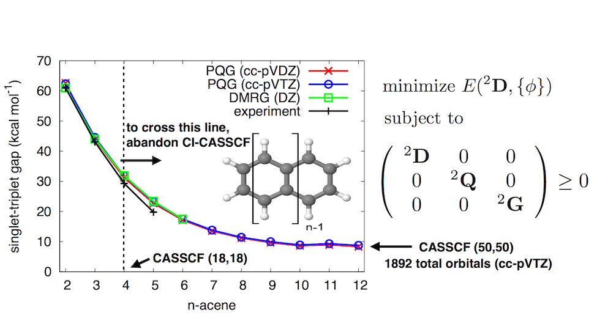
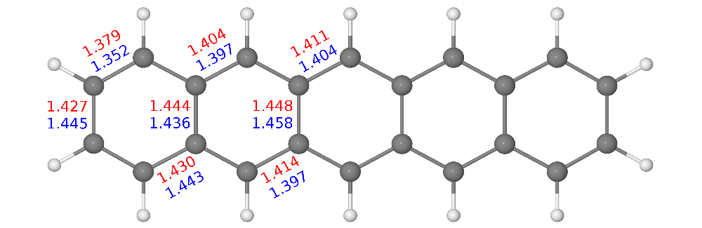
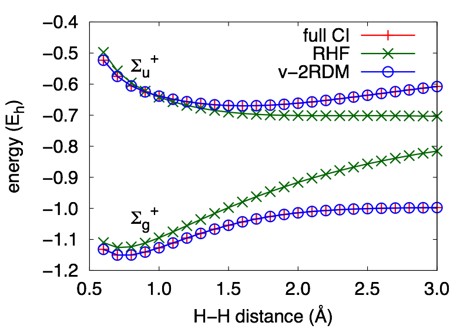
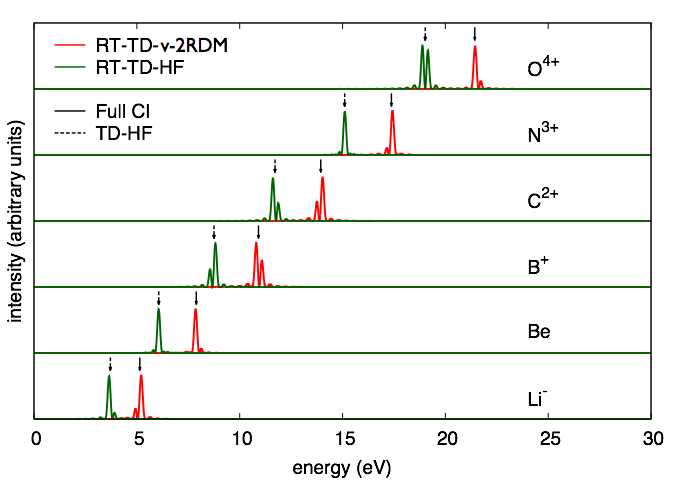
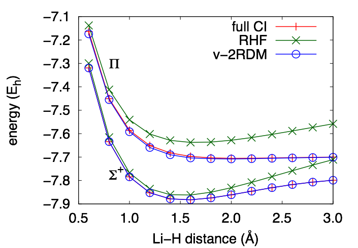

The standard approach for capturing nondynamic correlation effects in quantum
chemical computations is the complete active space self-consistent field (CASSCF)
method. In most implementations of CASSCF, the electronic structure of the active space is
described by a configuration interaction (CI) wave function. Because the size of the CI
wave function grows exponentially with the size of the active space, the application of
CASSCF to large actives spaces is nontrivial. The treatment of large active spaces
requires one to either (i) abandon CI in favor of some other wave function expansion
that scales polynomially with system size or (ii) abandon the wave function altogether.
Methods that employ the two-electron reduced-density matrix (2-RDM) as the central variable,
such as the variational 2-RDM method (v2RDM), facilitate the design of polynomially-scaling
CASSCF. The challenge in working directly with the 2-RDM is in ensuring that
that an optimized 2-RDM actually corresponds to an antisymmetric N-electron
wave function; a 2-RDM that satisfies this condition is said to be N-representable.
The webinar below gives an overview of the v2RDM approach to the nondynamic correlation
problem and demonstrates how to execute v2RDM calculations in the Q-Chem electronic
structure package.
Codes for large-scale v2RDM-driven CASSCF
We have developed two implementations of the v2RDM-driven CASSCF method. First,
highly-efficient CPU and GPU-based v2RDM-CASSCF calculations can be carried
out using the Q-Chem package (version 5.4 or greater). The GPU implementation is
currently only available in a development version of this package. Second, we have
developed free and open-source version of v2RDM-CASSCF in a plugin to the
Psi4 electronic structure package.
This plugin (called hilbert) can be found on GitHub.
In both codes, the
active-space 2-RDM is obtained from a semidefinite optimization procedure,
without the use of the N-electron wave function. These approximate CASSCF implementations
can be applied to systems with active spaces as large or larger than 50 electrons
in 50 orbitals [a (50e,50o) active space] and thousands of external orbitals (see Fig. 1).

Figure 1. The singlet/triplet state splitting at the v2RDM CASSCF/cc-pVXZ (X=D,T) level of theory. Experimental and DMRG values are taken from J. Hachmann, J. J. Dorando, M. Aviles, and G. K.-L. Chan, J. Chem. Phys. 127, 134309 (2007). The 2-RDMs satisfy the PQG two-particle N-representability conditions. Figure reproduced from J. Chem. Theory Comput. 12, 2260-2271 (2016).
You can read more about v2RDM methods, their properties, and our implementations here:
The direct optimization of the 2-RDM in the v2RDM approach
is a semidefinite programming (SDP) problem, and the SDP solver
we employ
is built upon an augmented Lagrangian formalism.
Because the Lagrangian is stationary with respect to variations
in both the primal and dual solutions to the SDP problem, it can
be shown that expressions for v2RDM-CASSCF analytic energy gradients
are identical to those that arise in conventional,
CI-based CASSCF methods.
We have implemented analytic energy gradients for v2RDM-CASSCF
which can be used for geometry optimizations and, in principle
ab initio molecular dynamics simulations. As an example,
we have
used our gradient implementation benchmark v2RDM-CASSCF-obtained
equilibrium geometries for
a collection of small molecules against conventional, CI-based CASSCF.
For these systems,
the two-particle (PQG) N-representability conditions yield
bond lengths that deviate from those from CI-CASSCF by about 0.6 pm,
and the application of three-particle (T2) conditions reduces the
average error by an order of magnitude. Figure 2 illustrates
bond lengths for the pentacene molecule computed at the v2RDM-CASSCF/cc-pVDZ
level of theory [using a (22,22) active space],
which differ from those derived from a crystal structure on average by 1.5 pm.

Figure 2. Symmetry-unique carbon
carbon bond lengths (Å)
obtained at the v2RDM-CASSCF/cc-pVDZ level of theory (red)
and derived from experiment
[J. Am. Chem. Soc.129, 10316-10317 (2007), blue]. The RDMs in the v2RDM-CASSCF optimization satisfied the PQG N-representability conditions. Figure reproduced from J. Chem. Theory Comput.19, 4113-4122 (2017).
Analytic gradients are available with conventional four-index electron repulsion integrals (ERIs)
in our open-source package
hilbert. Analytic gradients are available
with the resolution-of-the-identity approximation to the ERI tensor in Q-Chem 5.4. You can
read more about our derivation and implementation of analytic energy gradients for v2RDM-CASSCF
here:
Excitation energies from the extended random phase approximation
The ground-state N-representabilty problem is well understood,
but the direct optimization of an excited-state 2-RDM is much more
complicated.
In fact, without additional conditions that differentiate ground- and
excited-state 2-RDMs (which do not exist), a v2RDM-based procedure can
only ever yield the ground-state 2-RDM of a given spin symmetry.
So, to model excited states in strongly-correlated systems, we employ
and approach known as the extended random phase approximation (ERPA).
In the simplest form of the ERPA, excited states are approximated as
single excitations out of the ground state. In this case, one
can determine excited-state energies and wave functions with knowledge
of only ground-state 1- and 2-RDMs, the natural variables of the
v2RDM method!
You can read about the application of v2RDM/ERPA to the problem of core-level excitations here:
We have developed a method to extract excitation energies from the time-evolution of a one-electron reduced-density matrix (1-RDM) obtained from variational 2-RDM methods. The equation of motion (EOM) for the 1-RDM depends on the 2-RDM. In our method, the 2-RDM at a given time is obtained by a ground-state-like minimization of the energy with respect to the elements of the 2-RDM, subject to a subset of known N-representability conditions.
The method provides a good description of excitations to states of a different symmetry than the ground state. For H2 described by a 6-31G basis set, the Σg+ and Σu+ curves are indistinguishable from those obtained from full configuration interaction (CI) theory.

The method also predicts accurate excitation energies to the first excited state of different symmetry than the ground state in 4-electron systems like the set of ions that are isoelectronic with beryllium and the molecule, LiH.


You can read more about time-dependent RDM methods here: